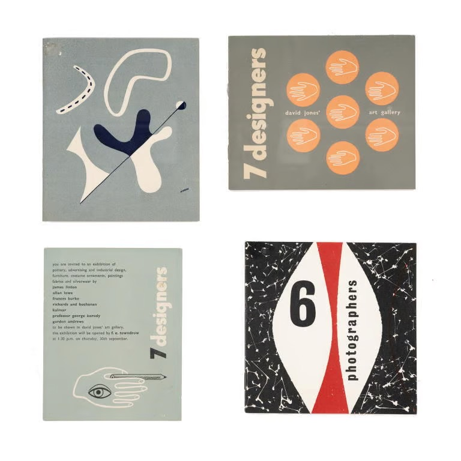
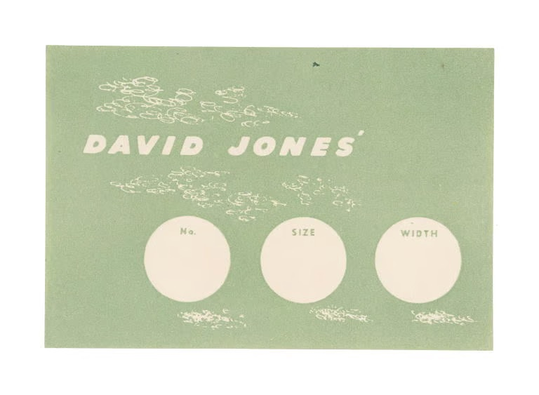
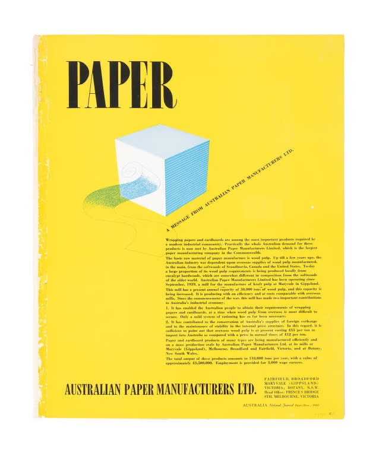
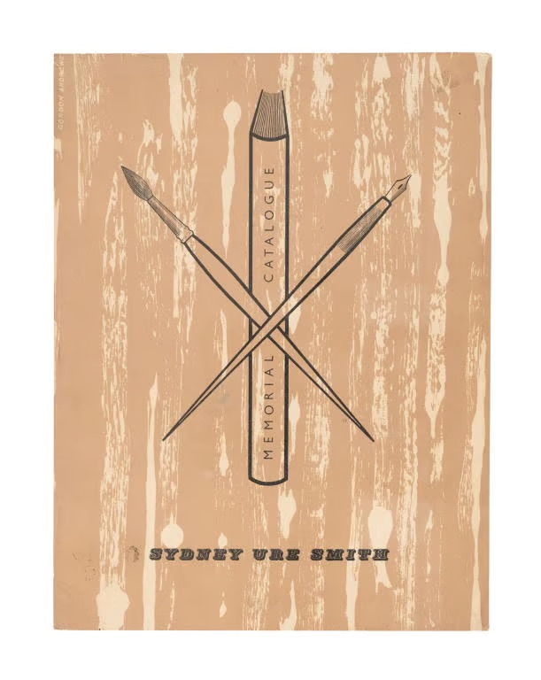
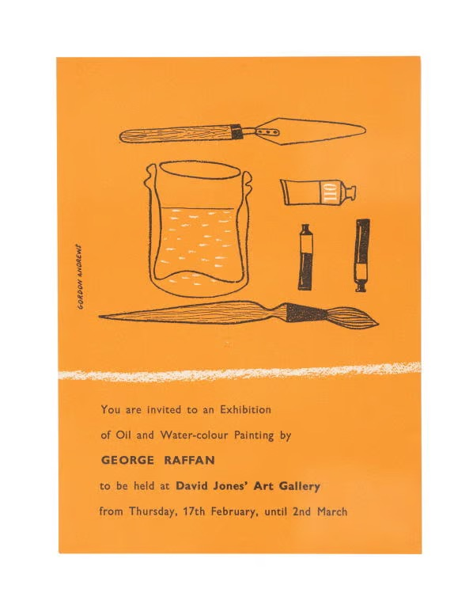
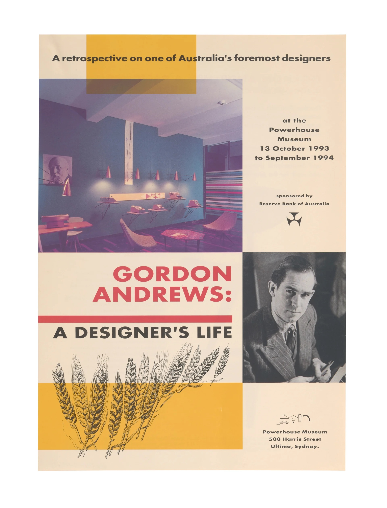

Catalogues
(1946-1955)

David Jones Catalogue

Labels designed by Gordon Andrews for David Jones

Australia National Journal cover by Gordon Andrews

Sydney Ure Smith Memorial Catalogue cover by Gordon Andrews

David Jones Catalogue (Inside)

David Jones' Art Gallery invitation designed by Gordon Andrews

'Gordon Andrews: A Designer's Life' leaflet sent to Geoffrey Collings
These rare surviving catalogues and invitation were designed by Gordon Andrews who designed numerous David Jones gallery and other exhibition catalogues during the late 1940s. 'Gordon Andrews: exhibition of design and craftsmanship' was Andrew's first post-WWII exhibition. Held at Margaret Jaye's gallery, 25 Rowe Street, Sydney from 5-12 November 1946, the display included exhibits of Andrews's paintings, buttons, jewellery, furniture and photography. There are photographs of the exhibition in the Gordon Andrews design archive (89/735-39). '7 Designers' was an important early Australian design exhibition held in the David Jones gallery, Sydney from 30 September - 15 October, 1948 (1). It included displays of 'pottery, advertising and industrial design, furniture, costume, ornaments, paintings, fabrics and silverware' by James Linton, Frances Burke, Gordon Andrews, Steven Kalmar, Richards and Buchanan, Allan Lowe and Professor George Korody. The '6 photographers' exhibition of 1955 brought together a group of 6 outstanding Australian photographers. Anne-Marie van de Ven, Curator, June 2013 (1) Bruce Ramage, A gallery within a Department Store - Origins and development of David Jones Art Gallery, Sydney, Fine Arts IV Dissertation, University of Sydney, 1982
Reference